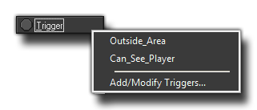

The Trigger Event (Obsolete)
The trigger event is one of the many events that can be triggered in an instance and may contain code or actions.
 Trigger Event
Trigger Event
A trigger event is an event that permits the user to define special conditions which will "trigger" a set of code or actions to run. When you add a trigger event you will be presented with a menu of sub events like this :

The first two things you see on that menu are just examples of triggers that have been defined previously (these were created to give an example and are not standard GameMaker:Studio triggers), and the last
section, "Add/Modify Triggers", is where you would define them so that they show up on this menu.
Important
The trigger event has been made obsolete in GameMaker:Studio and the references to it in this manual are only due to the fact that previous versions of GameMaker may have them. In this case it is important
#to know how they worked so as to make importing these older projects easier. For more in depth information on triggers, please see the following section of the manual -
Obsolete Functions : Triggers
© Copyright YoYo Games Ltd. 2013 All Rights Reserved